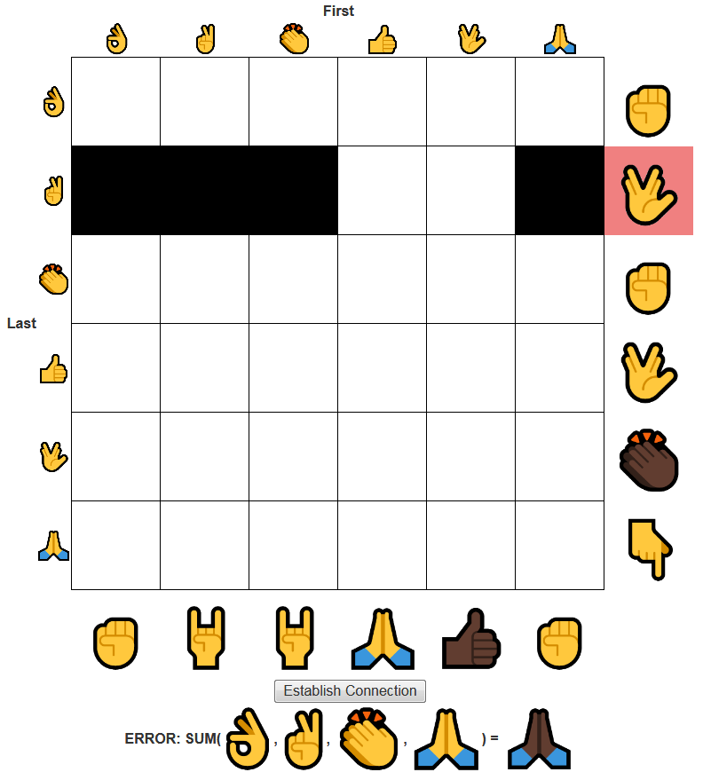
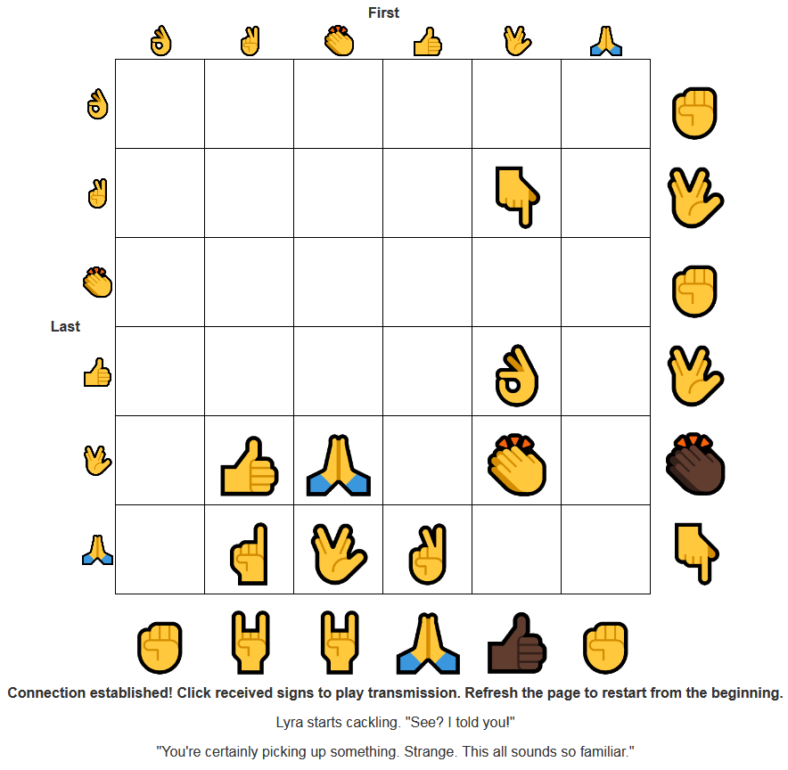

This puzzle starts with a 6-by-6 grid, labeled with emojis of different hand signs. As mentioned in the given text, the first step is figuring out how to parse the signals.
After some trial and error with the grid, solvers should discover that the grid sums the signs that are turned on for each row and column. The first time this sum does not match a larger hand sign on the right or bottom, it colors the failed constraint red, and returns an error message listing the incorrect sum. An example image is shown below.

Using this feedback, we can figure out what value each hand sign goes to. There are many ways to do so. Here's one potential solve path.
To make data collection easier, every dark-skinned hand sign is 11 more than the corresponding light-skinned hand sign. Here is the full mapping between numbers and hand signs.
| 0 | 1 | 2 | 3 | 4 | 5 | 6 | 7 | 8 | 9 | 10 | |||||||||||
| 11 | 12 | 13 | 14 | 15 | 16 | 17 | 18 | 19 | 20 | 21 |
With all the hand signs known, we can translate the givens in the logic puzzle into numbers and solve it.
| 4 | 5 | 2 | 1 | 6 | 3 | ||
| 4 | 0 | ||||||
| 5 | 6 | ||||||
| 2 | 0 | ||||||
| 1 | 6 | ||||||
| 6 | 13 | ||||||
| 3 | 8 | ||||||
| 0 | 9 | 9 | 3 | 12 | 0 |
| 4 | 5 | 2 | 1 | 6 | 3 | ||
| 4 | 0 | ||||||
| 5 | 6 | ||||||
| 2 | 0 | ||||||
| 1 | 6 | ||||||
| 6 | 13 | ||||||
| 3 | 8 | ||||||
| 0 | 9 | 9 | 3 | 12 | 0 |

Clicking each hand sign gives an audio clip of someone speaking or singing. The hand signs correspond to the number 1 to 8, providing an ordering.
Some of the clips talk about specific My Little Pony characters, or refer to the series in general. This, along with Rarity's comment, hint that every speaker is the voice actor of a My Little Pony character. (After all, everypony knows humans don't exist.)
The top of the grid is labeled "First", and the left side of the grid is labeled "Last". This indicates the final step: index the hand sign for "First" into the first name, and index the hand sign for "Last" into the last name of the character they voice.
| Hand Sign | Clip Source | Speaker | MLP Character | Index Pair | Letters |
|---|---|---|---|---|---|
| MLP Movie Cast Interview (starting from 5:23) | Zoe Saldana | Captain Celaeno | 5, 6 | AN | |
| MLP Movie Cast Interview (starting from 12:50) | Emily Blunt | Tempest Shadow (her villain name) | 6, 6 | SW | |
| My Eyes, Female Singer | Felicia Day | Pear Butter | 2, 6 | ER | |
| Chandelier | Sia Furler | Songbird Serenade | 6, 1 | IS | |
| KHAAAAAN!!! | William Shatner | Grand Pear | 1, 3 | GA | |
| Patton Oswalt Explains "My Little Pony" on CONAN | Patton Oswalt | Quibble Pants | 2, 3 | UN | |
| Lena Hall's 2014 Tony Award Acceptance Speech | Lena Hall | Countess Coloratura (her stage name) | 5, 3 | TL | |
| MLP Movie Cast Interview (starting at 24:30) | Kristen Chenoweth | Princess Skystar | 6, 5 | ET |
Together, the letters say "ANSWER IS GAUNTLET".
I strongly felt that the hunt needed a Lyra puzzle, due to her popularity among background ponies. The fanon that Lyra is obsessed with humans made MLP voice actors a natural connection. It was also a good way to add My Little Pony: The Movie representation to the hunt, since the movie had several celebrity voice actors.
I quickly made up the story of Lyra trying to tune a device to receive transmissions from an alternate dimension, along with a cluephrase and extraction I was happy with...which left the problem of providing the two indices in a way that made it a puzzle. After a few failed ideas, I landed on cluing what squares were activated in a 2D grid. The Kakurasu logic puzzle was flexible enough to support this, but the logic puzzle was very easy to solve, so I added the final layer of hand signs and interactivity. Kakurasu is a lesser-known logic puzzle with very simple rules, so by embedding it inside an interactive element with appropriate feedback, I could avoid explaining the rules, while adding more roadblocks between solvers and the solution.
I wasn't that satisfied with the design of this puzzle, since the logic puzzle was so disconnected from the audio clips you get afterwards. However, early feedback suggests people liked the cipher logic puzzle a lot more than I expected. Turns out solvers like interactive puzzles - who knew? The puzzle's design is still disconnected, the interactivity didn't make that go away, but I'm glad the puzzle went over well. As for the audio clips, I was worried some would be too hard to search, but testsolvers were able to find all of them, except for Shatner's cover of Rocket Man. It's a shame I had to change that clip, because it's such a great cover.
Rather amusingly, in the days before Hunt, one of the TSBI teams signed up as "Tempest Shadow (Berrytwist, Initially)". That reminded me I needed to clarify that solvers should use Tempest Shadow, instead of her birth name of Fizzlepop Berrytwist. Thanks for accidentally making hunt a little less ambiguous!
The MLP Movie is a mixed bag - fun if you're a fan, just okay if you aren't. On the other hand, the MLP episodes with guest voice actors are often really good. In particular, "The Perfect Pear" (starring Felicia Day and William Shatner) and "The Mane Attraction" (starring Lena Hall) are both 10/10 episodes and are worth checking out if you're a fan who's fallen behind on the show, or are new to MLP and want to see what the fuss is about.
(Incidentally, the 4 > 5 > 2 > 1 > 6 > 3 order used isn't random. It's my ranking for the first six seasons of My Little Pony: Friendship of Magic. You're free to disagree, of course.)